Project Management
Manage your DAW projects from a single application. No more folders. Never lose track of a project.


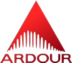
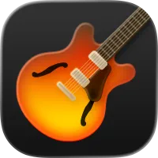
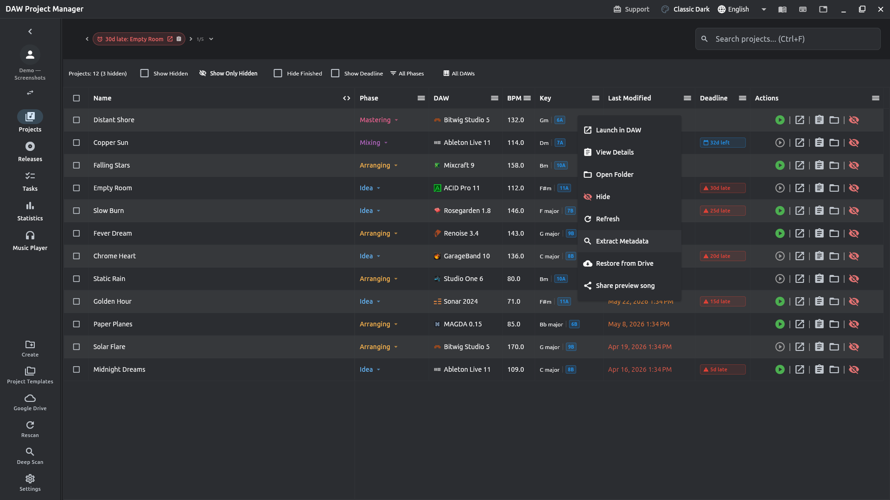
Advanced Metadata Extraction
DAW version, BPM, musical key, and project notes — extracted automatically for every project, no manual tagging. See which DAWs are supported; the list keeps growing.
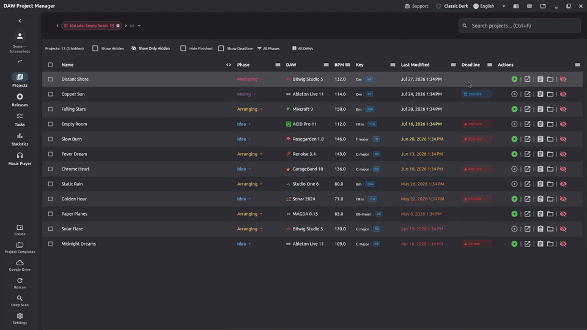
Finds Your Mixdowns Automatically
Export a mix from your DAW and DAW Project Manager finds the file on its own, making it playable for preview right inside the app.
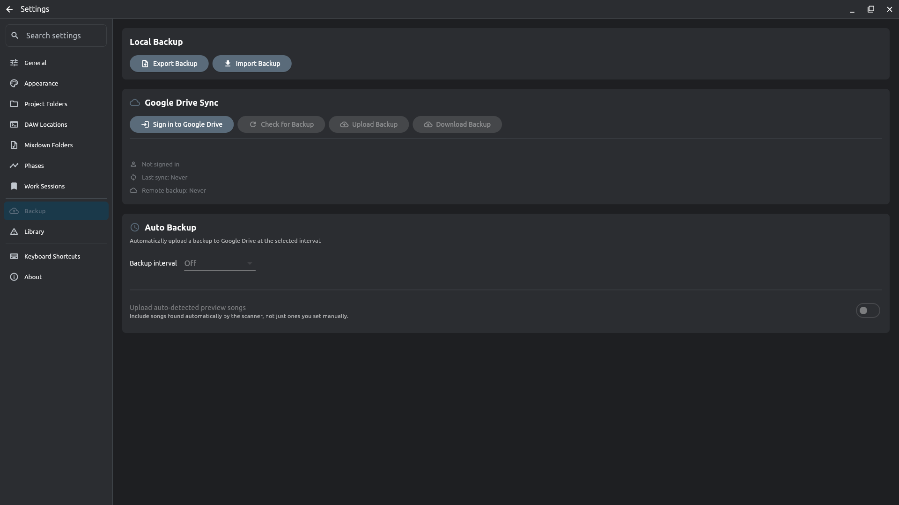
Offline First
Everything lives on your machine. You can optionally sync your project metadata to your own Google Drive — your project files are never sent to the cloud.
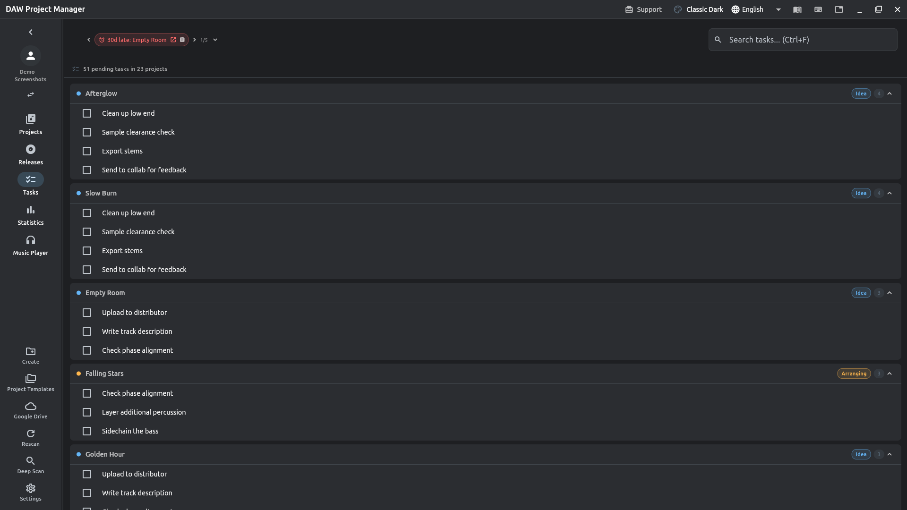
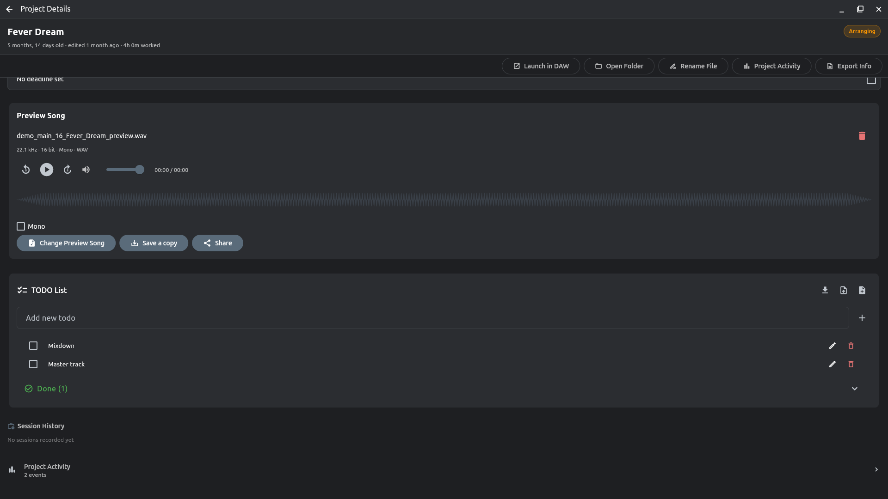
TODO Lists
Keep a checklist per project, then see every unfinished task across your whole library in one unified queue — check things off without ever leaving it.
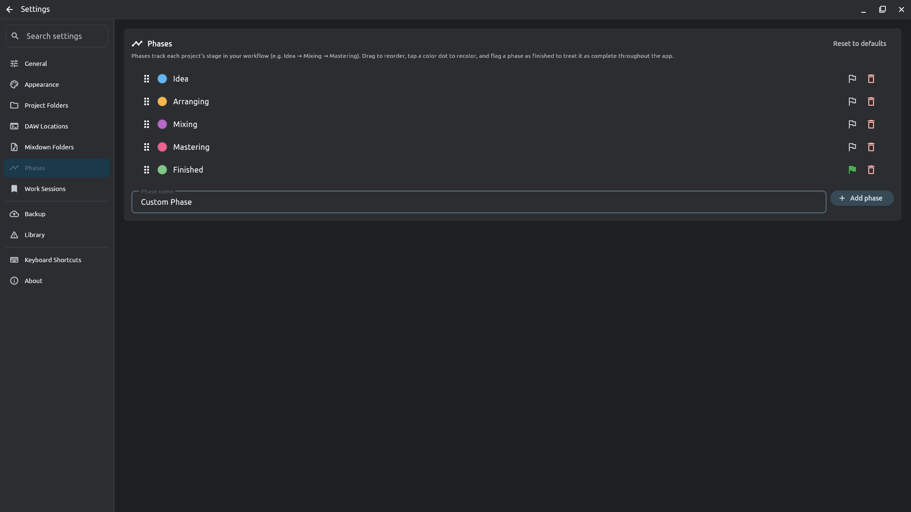
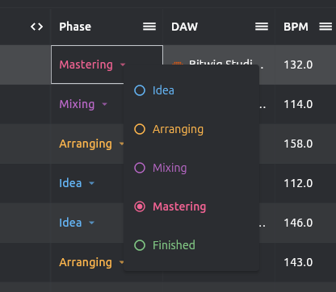
Phases
Rename, reorder, and color your own production phases instead of a fixed pipeline. Mark one as "finished," and every change is logged to the project timeline.
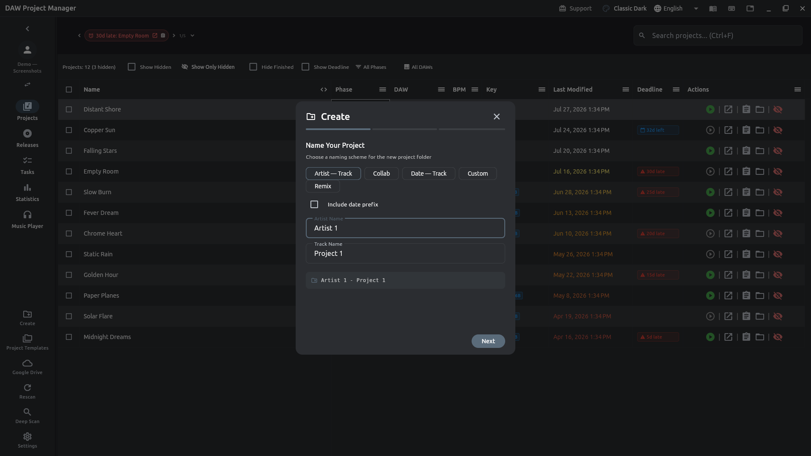
Create New Projects, Right From the App
Skip the folder shuffle — create a new project directly from DAW Project Manager, with a naming scheme, artist, and track name set up in seconds.
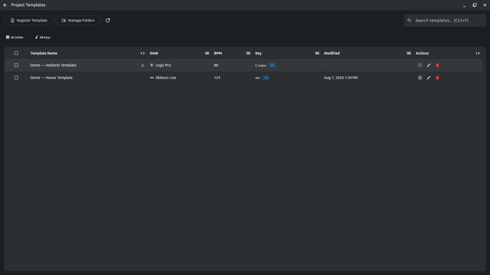
Save It Once, Reuse It Forever
Turn any project into a reusable template — BPM, key, DAW, and starter files included — then spin up new projects pre-filled from it.
And much more — see the full walkthrough in the documentation.